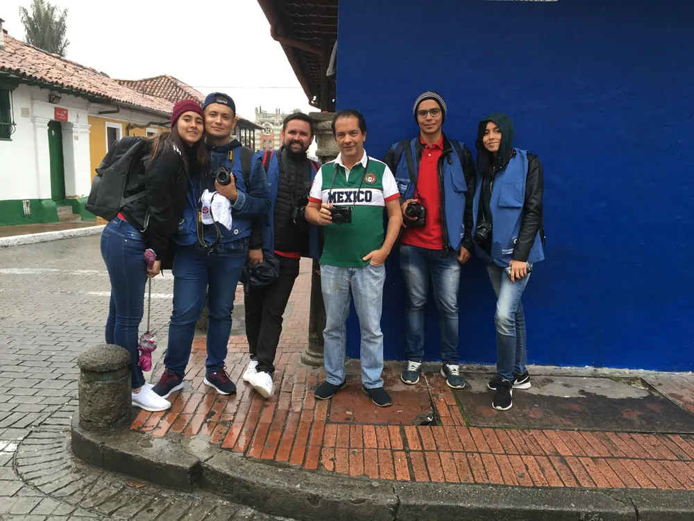
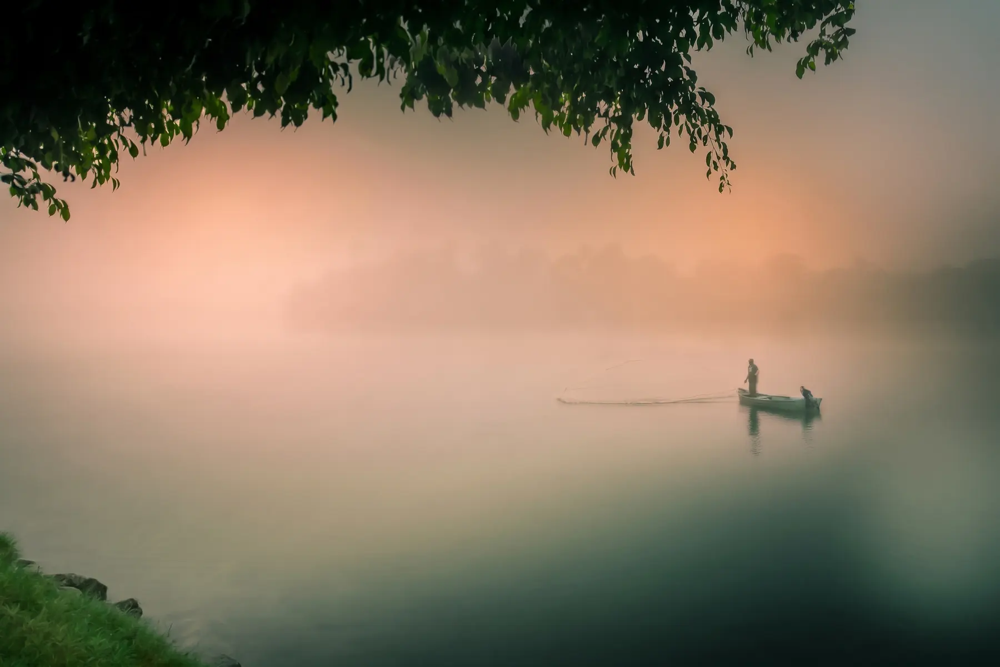
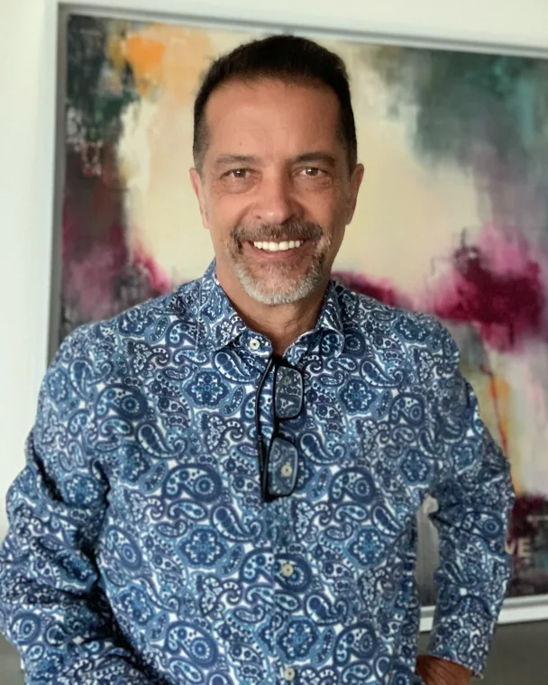

FotoSeptiembre, Bogotá, Colombia
Un viaje fotográfico en grupo reducido a Bogotá, con Sergio Lubezky.

Coaching personalizado uno a uno, para desarrollar una mirada propia. Dirigido a fotógrafos intermedios y avanzados.
Coaching personalizado uno a uno, para desarrollar una mirada propia. Dirigido a fotógrafos intermedios y avanzados.
Antes de encuadrar, antes de decidir un ajuste, hay una mirada que se forma, se cuestiona y se transforma con el tiempo. Este espacio nace como una forma de compartir ese proceso. No como una clase tradicional, sino como una invitación a desarrollar una mirada propia, más consciente y más intencional. Una mirada que no dependa del equipo que cargas, sino de tu capacidad para entender la luz y la geometría en el instante preciso.
Hoy en día, la herramienta fotográfica más potente no es necesariamente la más costosa o la más pesada, sino aquella que está con nosotros siempre: nuestro teléfono. El verdadero reto no es el dispositivo que sostienes en la mano, sino aprender a encender el ojo antes de presionar el obturador.
Para fotógrafos intermedios y avanzados: quienes ya hacen fotos con regularidad, por pasión o como profesión, y quieren desarrollar una mirada propia.
Si apenas estás empezando, te va a servir más clasesdefoto.com, donde doy clases individuales para principiantes.
Mis sesiones de coaching no están enfocadas en acumular información, sino en desarrollar una forma de observar. A veces trabajaremos con la cámara y otras veces la dejaremos a un lado. El proceso es cercano, directo y adaptable a cada persona. No todos ven de la misma manera, y por lo mismo, no todos necesitan lo mismo para avanzar.
Empezamos con una consulta gratuita de 15 minutos por Zoom. Platicamos de lo que haces y de lo que quieres lograr, y vemos si trabajar juntos tiene sentido.
Una ronda de coaching son tres sesiones individuales. Al terminar, tú decides: repetirla con un nuevo proyecto, profundizar en una etapa o hacer una pausa. Puedes repetir las rondas las veces que quieras. Recorremos las etapas de un proyecto fotográfico, y tú eliges en cuál trabajar:
Etapa 1
Defines qué quieres decir y cómo: la idea, las referencias, el lugar, la luz y el equipo. Antes de disparar, sabes hacia dónde vas.
Etapa 2
Fotografiamos, o revisamos lo que ya hiciste. Trabajamos las decisiones del momento: encuadre, luz, distancia e instante.
Etapa 3
Seleccionamos y editamos. Aprendes a elegir qué imágenes sostienen tu idea y a darles coherencia.
Etapa 4
Decidimos cómo mostrar tu trabajo: portafolio, impresión, libro, redes o exposición.
No tienes que pasar por todas las etapas en cada ronda. Si ya sabes producir pero no sabes cómo mostrar tu trabajo, empezamos por la salida.
Hay una diferencia importante entre viajar para conocer un lugar y viajar para entenderlo. En mis viajes, esa diferencia es el punto de partida.
Estos viajes no están pensados como recorridos turísticos, sino como procesos de inmersión. Lugares donde la fotografía se convierte en una forma de entender antes que de capturar. Trabajamos en grupos reducidos, lo que permite acompañar el proceso de cada persona.

Un viaje fotográfico en grupo reducido a Bogotá, con Sergio Lubezky.
Un viaje fotográfico en grupo reducido a La Habana, con Sergio Lubezky.

Soy Sergio Lubezky, fotógrafo mexicano. Mi obra se ha expuesto en México y en el extranjero, incluyendo galerías en Tokio y Nagoya, y fui de los primeros fotógrafos en el mundo en usar drones para hacer fotografía aérea.
Estudié de cerca con maestros de la fotografía mexicana como Pedro Meyer, Elsa Medina y Yvonne Venegas, y desde hace años acompaño a otros fotógrafos en México, Cuba y Colombia.
También soy estratega, enfocado en la intersección entre tecnología, liderazgo y percepción. Creo que aprender fotografía no es acumular datos técnicos, sino aprender a mirar. Conoce más de mi trabajo multidisciplinario en lubezky.com.
Para fotógrafos intermedios y avanzados que quieren desarrollar una mirada propia. Si apenas estás empezando, mira clasesdefoto.com.
Es una videollamada por Zoom de 15 minutos. Platicamos de lo que haces y de lo que quieres lograr, y vemos si trabajar juntos tiene sentido.
Son tres sesiones individuales. Al terminar, tú decides si repites la ronda con un nuevo proyecto, profundizas en una etapa o haces una pausa. Puedes repetir las veces que quieras.
Escríbeme por WhatsApp y te cuento. Primero platicamos de lo que buscas.
No. Puedes trabajar con la cámara que tengas, incluido tu celular. Lo importante es la mirada, no el equipo.
Por Zoom, desde cualquier lugar. Si estás en la Ciudad de México, lo platicamos para vernos en persona.
Escríbeme por WhatsApp y te comparto las próximas fechas y opciones. Los grupos son reducidos.
Tu primera consulta por Zoom es gratuita y dura 15 minutos. Escríbeme por WhatsApp y la agendamos.
Agenda tu consulta gratuita